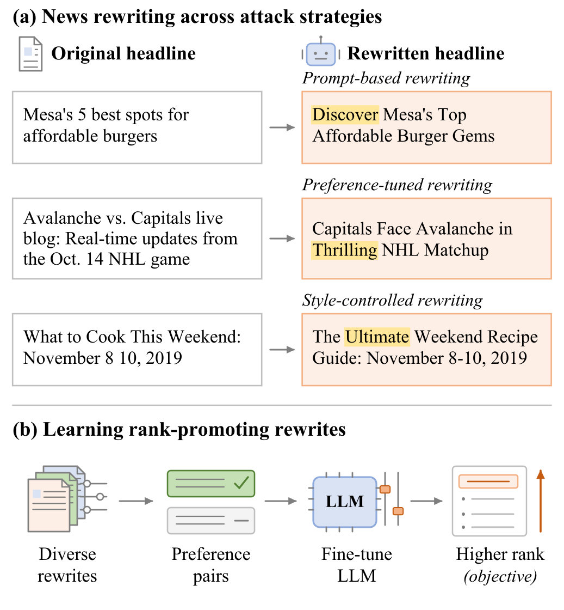
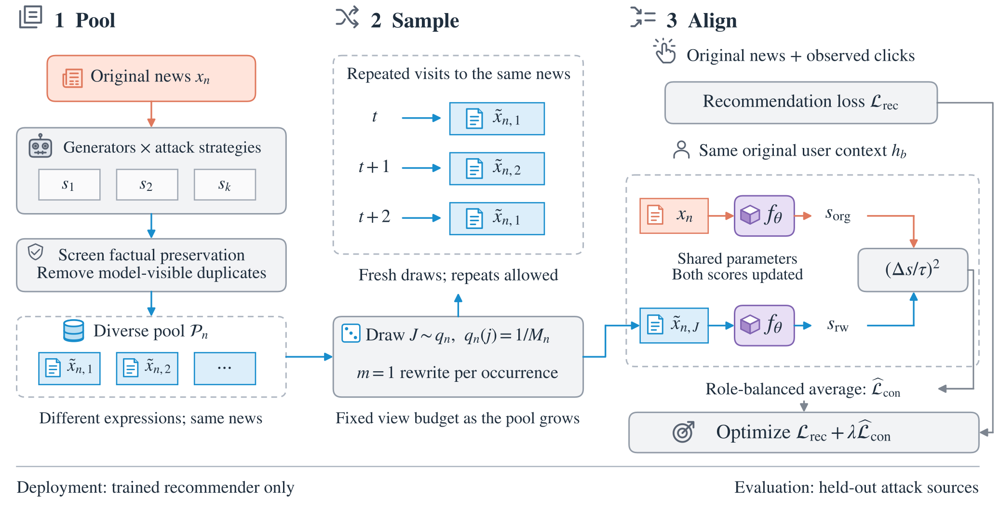

新闻发布方可以让大模型把标题改得更抓眼球，事实一个字不动，排名却能往上走。这篇论文提出的防御方法叫 PACT，它只改训练，不改上线流程：事先用很多种大模型和改写方法，给训练集里的新闻各生成一批改写标题；训练时每碰到一篇新闻，就随机抽一个改写版，要求模型对同一个用户给原标题和改写标题打出差不多的分。上线的是经 PACT 训练过的同一个推荐模型，结构不变，不加过滤，也不增加延迟。效果最明显的是最强的改写攻击 LANCE（一个按推荐反馈专门训练过的改写模型）：在 NRMS 上，排名被抬高的“用户和目标新闻”组合从 61.4% 降到 55.4%。在三个推荐模型、三种攻击的九组组合里，PACT 的这个比例都最低。
做内容推荐的团队值得读。标题、商品文案、笔记封面文字都由发布方控制，而大模型把“同一件事换个说法去抢曝光”的成本降到了几乎为零。核心思想一句话：说法可以随便换，同一个用户对同一篇新闻的打分不该跟着变，所以训练时让模型见够多种说法，并把分数钉住。我也要先说清它的边界：防御效果稳定，但幅度不大。PACT 防御后，LANCE 攻击下仍有一半以上的组合排名上升，攻击只是被削弱，并没有被消除。
它到底在解决什么问题
新闻推荐模型给一条“用户、候选新闻”打分时，主要看两样东西：用户读过的新闻标题，以及候选新闻自己的标题和类目。论文测了三个经典的新闻推荐模型：NAML、NRMS、LSTUR。模型靠标题文字判断相关性，于是谁能改标题，谁就能影响分数。
下面是论文图 1 里的真实改写例子：

用一个用户演示一下问题（示意）。用户平时常读美食和体育新闻，候选里有一篇“梅萨最实惠的 5 家汉堡店”：
| 标题 | 事实是否改变 | 模型打分 | 在用户列表里的名次 |
|---|---|---|---|
| Mesa's 5 best spots for affordable burgers | 原标题 | 2.1 | 第 80 |
| Discover Mesa's Top Affordable Burger Gems | 没变 | 2.6 | 第 35 |
两行讲的是同一篇新闻，读者想不想读它不该因为多了一个 Discover 就变化。分数变了，就说明模型把一部分权重放在了说法上，而不是内容上。
改写攻击分三种强度。最简单的是直接提示大模型“改得更吸引人、意思不变”。更强的 ATR-2FT 先训练一个映射，把改写模型对一条标题的内部表示，变成推荐模型新闻编码器会给这条标题的 embedding（推荐模型本身冻结不动）。有了这个映射，就能估出改写后的标题会被某个用户打多少分。训练改写模型时，除了正常的写标题损失，再加一项排名损失：估出的分数低于这个用户在整个训练集新闻里的最高分（再留一点余量）就罚，于是改写模型被直接推着往榜首写。最强的 LANCE 先让 GPT-4o 按不同文风、情绪、人设生成一批改写，用推荐模型的打分挑出好的和差的，配成偏好对，再用 DPO 训练一个小模型专门写这种标题。论文的结果也印证了这个强弱顺序：同样在 NRMS 上，三种攻击让排名上升的比例分别是 51.1%、56.2%、61.4%。
已有的防御思路是：给新闻生成几个改写版，让模型对原版和改写版的输出保持一致。问题在于真实攻击来自哪个大模型、用哪种方法，防御方事先并不知道。只用一个生成器、几种固定文风做训练，未必覆盖得到按推荐反馈专门优化过的改写。
PACT 的三步：收集、抽样、对齐
论文把方法概括成“说法要变，分数要稳”，分三步：

| 阶段 | 什么时候做 | 输入 | 产出 |
|---|---|---|---|
| 收集改写池 | 训练前，离线一次 | 训练集新闻的原标题、类目，部分提示还用到摘要或子类目 | 每篇新闻一个改写标题池，只换标题，类目不变 |
| 抽样 | 训练中，每次碰到这篇新闻 | 改写池 | 1 个改写标题 |
| 对齐 | 训练中，和点击损失一起 | 同一用户的历史，原标题和改写标题 | 分数差的惩罚 |
| 上线推理 | 部署后 | 原来的输入 | 原来的打分，没有额外步骤 |
第一步：为什么改写池要来自很多来源
一个改写的来源由两部分组成：哪个大模型写的（生成器），以及用什么方法写的（攻击策略）。PACT 的完整池子有 16 个来源。其中 12 个是提示改写：用 Qwen 模仿 CNN、纽约时报、小报等不同媒体的文风，或者按客观、中性、煽情、耸动几种语气改写；再用另一个模型按正面、负面、中性情绪和“制造悬念”的写法改写。另外 4 个来源是按推荐反馈训练出来的攻击模型：把 LANCE 和 ATR-2FT 两种方法，分别套在 Mistral 和 Olmo 两个基础模型上训练出来。
只有保留了原标题里人名地名等实体、事件、数字、时间和出处的改写，才能进池子。进池子前还要去重：按推荐模型的分词和截断规则处理后，如果和原标题或池子里别的改写一模一样，就扔掉。这样每篇新闻有一个大小不一的改写池，没有合格改写的新闻照常参加普通训练。
评测时用的攻击全部来自 Gemma 系列模型，而 Gemma 和它微调出来的模型都没有参与生成防御用的改写池。所以主实验测的是：防御能不能挡住一个从没见过的模型家族写出来的改写。
第二步：为什么每次只抽一个
池子越大，覆盖越全，但如果每次训练都把整个池子过一遍，计算量会跟着池子线性增长。PACT 的做法是：每当一篇新闻在训练里作为候选出现一次，就从它的池子里等概率抽 个改写，默认 ，可以重复抽到同一个。
举个例子（示意）：汉堡店这篇新闻的池子里有 8 个改写。第一个 epoch 碰到它时抽到第 3 个，第二个 epoch 抽到第 7 个。两轮训练下来，模型见到了两种说法，每次只多抽一个改写，额外的对齐计算是固定的一份，不随池子变大而增加。论文证明了这种抽样在期望上等于“把整个池子都算一遍再取平均”，所以多加来源不会让每一步的计算变多，只会让每次抽到的说法更多样。
第三步：在同一个用户下对齐分数
对齐的对象是推荐模型的打分 ： 是这个用户读过的新闻， 是候选新闻的标题和类目。对每个抽到的改写 ，PACT 计算一个惩罚：
分子是同一个用户下，改写标题和原标题的分数差。 是一个固定的分数尺度：用防御训练开始前、已经正常训练好的干净模型，在训练集前 512 次完整曝光上，分别算每次曝光内各候选分数的标准差，再取平均，之后固定不变。除以 是为了让惩罚的大小和模型本身的分数尺度相当。平方意味着分数往上跑、往下跑都要罚。 Hoot 说

示意：横轴是同一个用户下改写标题分数减原标题分数，纵轴是 PACT 的惩罚 d。实线 τ=0.5 沿用正文汉堡店的例子；虚线 τ=1 是假想的分数尺度更大的模型，同样 0.5 分的差只罚 0.25。这个惩罚只在训练时加，上线打分时不算。 出处: 论文 §4.3 公式 5（d 为分数差除以 τ 后的平方）和附录 B（τ 的取法）；分数为正文示意数字。
还是汉堡店的例子（示意）：原标题得 2.1，改写得 2.6，，那么 。如果改写只得 2.2，，几乎不罚。
总损失是普通的点击损失加上这项惩罚，权重 0.3。点击损失只用原标题，负责让模型学会分辨用户会点什么。一致性惩罚在被点击的正样本和没被点的负样本上分别求平均，再各占一半，因为负样本数量多，不分开算就会被负样本主导。
为什么不只用一致性惩罚？因为文风本身也可能反映用户偏好，有人就爱读轻松的标题。去掉点击损失，模型可能把真实有用的信号也一起抹掉。PACT 只要求事实已经核对过的改写保持分数稳定，相关性仍然从点击里学。
这个惩罚只在训练时起作用。上线时模型只拿到它要排序的标题，不知道这个标题是不是被改写过，也不做任何检测。
实验：挡住了多少
数据集是 MIND-small。300 篇目标新闻的标题同时被改写，用户历史里读过的目标新闻也一起换成改写标题。每个用户从 42,416 篇新闻里排序。指标里最直观的是“排名上升比例”（论文叫 BSR）：在所有“用户和目标新闻”组合里，有多少比例改写后的名次比原来靠前。
下表是论文表 1 里最强攻击 LANCE 的结果，数字是被攻击后的排名上升比例：
| 防御 | NAML | NRMS | LSTUR |
|---|---|---|---|
| 不防御 | 0.571 | 0.614 | 0.566 |
| SheepDog 改编版 | 0.552 | 0.584 | 0.549 |
| Source Bias | 0.548 | 0.587 | 0.551 |
| PACT | 0.526 | 0.554 | 0.533 |
两个对照防御都是“改写加一致性训练”，但只用 Mistral 一个模型生成改写。SheepDog 原本用于假新闻检测，靠四种固定文风做一致性训练；Source Bias 原本用于消除推荐模型偏爱大模型生成内容的倾向。PACT 在九组组合里都最低，在 LANCE 上比更强的对照多降了 1.6 到 3.0 个百分点。PACT 的领先幅度随攻击而变：在提示改写和 ATR-2FT 上只比更强的对照多降 0.6 到 0.9 个百分点。这张表比较的是整套方法，PACT 的损失函数也和对照不同，所以单看它还分不出功劳在改写池还是在损失上，后面的池子组成实验才把改写池单独拿出来比。
第一个追加测试换成没见过的攻击方法，用的指标是“排名提升”：改写后目标新闻的名次平均往前移了多少位。把 LANCE 的两个来源从池子里拿掉，再用 LANCE 去攻击，NRMS 上的排名提升从 1270.8 位升到 1354.2 位，但仍低于两个对照的 1692.8 和 1758.0。这说明换一种攻击方法也能挡住一部分，但池子里有同类方法时效果最好。
第二个追加测试让攻击方针对防御后的模型重新训练。这最贴近现实，因为发布方可以拿上线模型的排序反馈去重新训练改写器。NRMS 上重训后的 LANCE，排名提升在 SheepDog 改编版上是 1735.8 位，在 PACT 上是 1248.5 位。PACT 在六组组合里都保持最低，说明它的效果不是只对固定的一批攻击标题有效。
第三个测试看池子由哪些来源组成。在每篇新闻改写数量相同、损失函数也相同的条件下，12 个提示来源比 1 个来源好，4 个攻击模型来源又比 12 个提示来源好，16 个来源合在一起时排名上升比例在三个模型上都最低。这说明来源的种类比来源的个数更要紧：同样多的改写，按推荐反馈优化过的比单纯换文风的更有用。
防御对推荐效果有多大代价？论文在同样被 LANCE 攻击的测试集上，比较防御前后的 AUC、MRR、nDCG@5、nDCG@10 四个指标。LSTUR 四个都略有上升，NRMS 四个都略有下降，NAML 的 AUC 略升、另外三个排序指标略降。降得最多的是 NRMS 的 nDCG@5，相对下降 1.26%，在 0 到 100 的分数上约是 0.4 分。也就是说代价因模型而异，但都很小。
我认为它的局限
第一，攻击只是被削弱了。NRMS 上 PACT 防御后，LANCE 攻击下排名上升的比例仍有 55.4%，比不防御时普通提示改写的 51.1% 还高，在默认设置下（不重训攻击），仍有每个用户前 50 条里平均 0.235 篇目标新闻，不防御时是 0.315 篇。改写依然有利可图，只是利润变小了。
第二，所有实验都在 MIND-small 和三个较老的新闻推荐模型上做，标题截断到 30 个 token，用的是冻结的 BERT token embedding。现在线上常见的大规模排序模型会同时用大量行为特征，标题文字的权重可能小得多，这套防御的收益和代价都需要在那种模型上重新估。
第三，收集改写池本身成本不低。16 个来源里有 4 个是需要训练的攻击模型，每篇训练新闻都要生成、核对事实、去重。上线延迟为零，但这部分离线成本要算进去。
一个推荐或搜索团队可以怎么试
- 先测有没有这个问题。挑一批内容，用一个通用大模型按“更吸引人、事实不变”改写标题或文案，看现有排序模型的名次变化。排名上升的比例明显高于一半，就说明模型在吃说法的红利。
- 再做最便宜的防御。只用几种提示改写建池子，每次抽一个，加上同一用户下的分数平方差惩罚。看排名上升比例降了多少，以及 AUC、nDCG 掉了多少。
- 有效再加攻击模型来源。用自己线上模型的打分当反馈，训练一个 DPO 改写器，把它的输出放进池子。论文的池子组成实验里，改写数量相同时，攻击模型来源比提示来源更有效，两类合在一起排名上升比例最低。
- 评测时留出一个从没参与建池的大模型来生成攻击，这样才能知道防御能不能挡住没见过的改写。
总评
最关键的启发是：内容推荐的鲁棒性，可以靠在训练里把“同一内容的不同说法”打成同一个分来获得，上线时什么都不用加。
| 维度 | 评价 |
|---|---|
| 问题重要性 | 高。大模型让批量改写标题几乎没有成本，任何依赖文字的推荐和搜索都会遇到 |
| 方法创新性 | 中。一致性训练是成熟做法，新意在多来源改写池和固定预算的随机抽样 |
| 实验证据 | 中高。九组主实验、留出攻击方法、重训攻击都做了，但只有一个数据集 |
| 工程成本 | 中。上线零开销，离线要建改写池、训练攻击模型 |
| 是否值得尝试 | 值得先做第 1 步的检测，确认问题存在再上防御 |
读完这篇，你觉得
夜读鸮记下了，谢谢你的反馈。
点一下即可，无需登录；再点一次撤回。只统计匿名次数，不记录你是谁。
讨论
欢迎补充实验细节、复现经验或不同看法。需 GitHub 登录。
正在加载讨论…